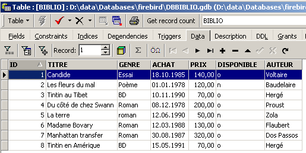
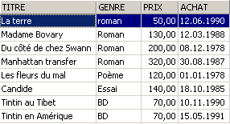
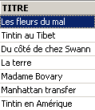
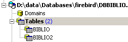
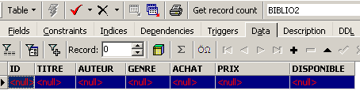
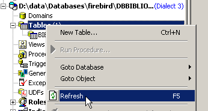
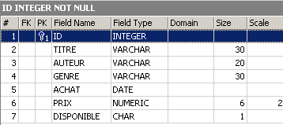
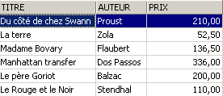
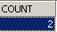
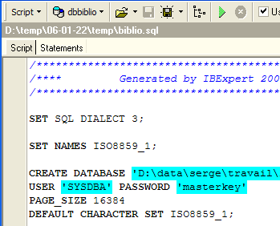

3. Introducción al lenguaje SQL
En esta sección del capítulo presentamos los primeros comandos SQL que permiten crear y manejar una sola tabla. Por lo general, ofrecemos una versión simplificada de los mismos. Su sintaxis completa está disponible en las guías de referencia de Firebird (véase el párrafo 2.2).
Una base de datos es utilizada por personas con diferentes niveles de conocimiento:
- el administrador de la base de datos suele ser alguien que domina el lenguaje SQL y las bases de datos. Es él quien crea las tablas, ya que esta operación por lo general solo se realiza una vez. Con el tiempo, puede que tenga que modificar su estructura. Una base de datos es un conjunto de tablas vinculadas por relaciones. Es el administrador de la base quien definirá estas relaciones. También es él quien otorgará derechos a los distintos usuarios de la base. De este modo, indicará que tal usuario tiene derecho a visualizar el contenido de una tabla, pero no a modificarla.
- El usuario de la base de datos es quien da vida a los datos. Según los derechos otorgados por el administrador de la base, añadirá, modificará o eliminará datos en las distintas tablas de la base. También los analizará para extraer información útil para el buen funcionamiento de la empresa, la administración, etc.
En el párrafo 2.6, presentamos el editor SQL de la herramienta [IB-Expert]. Es esta herramienta la que vamos a utilizar. Recordemos algunos puntos:
- El editor SQL se abre mediante la opción de menú [Tools/SQL Editor] o presionando la tecla [F12]

A continuación, aparece una ventana [SQL Editor] en la que podemos ingresar un comando SQL:

La captura de pantalla anterior suele representarse con el siguiente texto:
3.1. Los tipos de datos de Firebird
Al crear una tabla, debemos indicar el tipo de datos que puede contener una columna de la tabla. A continuación, presentamos los tipos de datos más comunes de Firebird. Cabe señalar que estos tipos de datos pueden variar de un SGBD a otro.
entero en el rango [-32768, 32767]: 4 | |
número entero en el dominio [–2 147 483 648, 2 147 483 647]: -100 | |
número real de n cifras, de las cuales m están después de la coma NUMERIC(5,2): -100,23, +027,30 | |
número real aproximado con 7 cifras significativas: 10.4 | |
número real aproximado con 15 cifras significativas: -100.89 | |
cadena de exactamente N caracteres. Si la cadena almacenada tiene menos de N caracteres, se completa con espacios. CHAR(10): 'ANGERS ' (4 espacios al final) | |
cadena de hasta N caracteres VARCHAR(10): 'ANGERS' | |
una fecha: '2006-01-09' (formato YYYY-MM-DD) | |
una hora: '16:43:00' (formato HH:MM:SS) | |
fecha y hora juntas: '2006-01-09 16:43:00' (formato YYYY-MM-DD HH:MM:SS) |
La función CAST() permite convertir de un tipo a otro cuando sea necesario. Para convertir un valor V declarado como de tipo T1 a un tipo T2, se escribe: CAST(V,T2). Se pueden realizar los siguientes cambios de tipo:
- de número a cadena de caracteres. Este cambio de tipo se realiza de manera implícita y no requiere el uso de la función CAST. Por lo tanto, la operación 1 + '3' no requiere la conversión del carácter '3'. Su resultado es el número 4.
- De DATE, TIME, TIMESTAMP a cadenas de caracteres y viceversa. Por lo tanto,
- TIMESTAMP a TIME o DATE y viceversa
En una tabla, una fila puede tener columnas sin valor. Se dice que el valor de la columna es la constante NULL. Se puede comprobar la presencia de este valor utilizando los operadores
IS NULL / IS NOT NULL
3.2. Creación de una tabla
Para aprender a crear una tabla, comenzaremos por crear una en modo [Design] con IBExpert. Para ello, seguiremos el método descrito en el párrafo 2.3. De esta manera, crearemos la siguiente tabla:

Esta tabla servirá para registrar los libros comprados por una biblioteca. El significado de los campos es el siguiente:
Name | Tipo | Restricción | Significado |
Esta tabla, que se creó con la herramienta IBEXPERT como asistente, podría haberse creado directamente mediante los comandos SQL. Para conocerlos, basta con consultar la pestaña [DDL] de la tabla:

El código SQL que permitió crear la tabla [BIBLIO] es el siguiente:
- línea 1: propietario Firebird — indica el nivel de dialecto SQL utilizado
- línea 2: propietario Firebird — indica la familia de caracteres utilizada
- líneas 6 a 14: estándar SQL: crea la tabla BIBLIO definiendo el nombre y el tipo de cada una de sus columnas.
- línea 16: estándar SQL: crea una restricción que indica que la columna TITRE no admite duplicados
- línea 17: estándar SQL: indica que la columna [ID] es la clave primaria de la tabla. Esto significa que dos filas de la tabla no pueden tener el mismo valor en ID. Aquí nos acercamos a la restricción [UNIQUE NOT NULL] de la columna [TITRE] y, de hecho, la columna TITRE podría haber servido como clave primaria. La tendencia actual es utilizar claves primarias que no tienen significado y que son generadas por el SGBD.
La sintaxis del comando [CREATE TABLE] es la siguiente:
CREATE TABLE tabla (nom_colonne1 type_colonne1 contrainte_colonne1, nom_colonne2 type_colonne2 contrainte_colonne2, ..., nom_colonnen type_colonnen contrainte_colonnen, otras restricciones) | |||||||||
crea la tabla table con las columnas indicadas
|
La tabla [BIBLIO] también podría haberse construido con el siguiente orden SQL:
Veamos cómo. Repitamos este comando en un editor SQL (F12) para crear una tabla que llamaremos [BIBLIO2]:

Después de ejecutarla, hay que validar la transacción para ver el resultado en la base de datos:

Una vez hecho esto, la tabla aparece en la base de datos:

Al hacer doble clic en su nombre, se puede acceder a su estructura:

Efectivamente, se muestra la definición que hicimos de la tabla [BIBLIO2]
3.3. Eliminación de una tabla
La orden SQL para eliminar una tabla es la siguiente:
DROP TABLE table | |
Supprime [table] |
Para eliminar la tabla [BIBLIO2] que acabamos de crear, ahora ejecutamos el siguiente comando SQL:

y la validamos con [Commit]. La tabla [BIBLIO2] se elimina:

3.4. Llenado de una tabla
Insertamos una fila en la tabla [BIBLIO] que acabamos de crear:

Validemos la adición de la fila mediante [Commit] y luego hagamos clic con el botón derecho en la fila agregada:

y solicitemos, como se muestra arriba, que la línea insertada se copie al portapapeles en forma de una orden SQL INSERT. A continuación, abramos cualquier editor de texto y peguemos (Pegar / Paste) lo que acabamos de copiar. Obtendremos el siguiente código SQL:
INSERT INTO BIBLIO (ID,TITRE,AUTEUR,GENRE,ACHAT,PRIX,DISPONIBLE) VALUES (1,'Candide','Voltaire','Essai','18-OCT-1985',140,'o');
La sintaxis de una orden de inserción SQL es la siguiente:
insert into table [(colonne1, colonne2, ..)] values (valor1, valor2, ....) | |
agrega una fila (valor1, valor2, ..) a table. Estos valores se asignan a colonne1, colonne2, ... si existen; de lo contrario, a las columnas de la tabla en el orden en que se definieron. |
Para insertar nuevas filas en la tabla [BIBLIO], se ingresarán las siguientes órdenes INSERT en el editor SQL. Se ejecutarán y validarán [Commit] estas órdenes una por una. Se utilizará el botón [New Query] para pasar a la siguiente orden INSERT.
Después de validar las distintas órdenes [Commit], obtenemos la siguiente tabla:
 |
3.5. Consulta de una tabla
3.5.1. Introducción
En el editor SQL, escribamos el siguiente comando:

y ejecutémoslo. Obtenemos el siguiente resultado:

El comando SELECT permite consultar el contenido de las tablas de la base de datos. Este comando tiene una sintaxis muy completa. Aquí solo presentaremos la que permite consultar una sola tabla. Más adelante abordaremos la consulta simultánea de varias tablas. La sintaxis del comando SQL [SELECT] es la siguiente:
SELECT [ALL|DISTINCT] [*|expression1 alias1, expression2 alias2, ...] FROM table | |
muestra los valores de expressioni para todas las filas de la tabla. expressioni puede ser una columna o una expresión más compleja. El símbolo * se refiere al conjunto de columnas. Por defecto, se muestran todas las filas de la tabla (ALL). Si existe DISTINCT, las filas idénticas seleccionadas solo se muestran una vez. Los valores de expressioni se muestran en una columna titulada expressioni o aliasi, si se ha utilizado esta última. |
Ejemplos:


Arriba, hemos asociado alias (TITRE_DU_LIVRE, PRIX_ACHAT) a las columnas solicitadas.
3.5.2. Visualización de las filas que cumplen una condición
SELECT .... WHERE condition | |
solo se muestran las líneas que cumplen la condición condition |
Ejemplos


Uno de los libros tiene el género «novela» y no «Novela». Usamos la función upper, que convierte una cadena de caracteres a mayúsculas para obtener todas las novelas.

Podemos combinar condiciones mediante operadores lógicos
ET logique | |
OU logique | |
Negación lógica |


 |

3.5.3. Visualización de las líneas en un orden determinado
A las sintaxis anteriores se les puede agregar una cláusula ORDER BY que indique el orden de visualización deseado:
SELECT .... ORDER BY expression1 [asc|desc], expression2 [asc|dec], ... | |
Las filas resultantes de la selección se muestran en el orden de 1: orden creciente (asc / ascending, que es el valor predeterminado) o decreciente (desc / descending) de expression1 2: en caso de igualdad de expression1, la visualización se realiza según los valores de expression2 etc. |
Ejemplos:




3.6. Eliminación de filas en una tabla
DELETE FROM table [WHERE condition] | |
elimina las filas de table verificando condition. Si esta última no existe, se eliminan todas las filas. |
Ejemplos:

Los dos comandos siguientes se ejecutan uno tras otro:

3.7. Modificación del contenido de una tabla
update table set columna1 = expresión1, columna2 = expresión2, ... [where condition] | |
Para las filas de table que verifican condition (todas las filas si no hay ninguna condición), colonnei recibe el valor de expressioni. |
Ejemplos:
Se escriben todos los géneros en mayúsculas:

Se verifica:

Mostramos los precios:

El precio de las novelas aumenta un 5 %:
Verificamos:

3.8. Actualización definitiva de una tabla
Cuando se realizan modificaciones en una tabla, Firebird las genera en realidad en una copia de la tabla. Estas modificaciones pueden hacerse definitivas o bien anularse mediante los comandos COMMIT y ROLLBACK.
COMMIT | |
hace definitivas las actualizaciones realizadas en las tablas desde la última ejecución de COMMIT. |
ROLLBACK | |
anula todas las modificaciones realizadas en las tablas desde la última ejecución de COMMIT. |
Se ejecuta implícitamente un COMMIT en los siguientes momentos: a) Al desconectarse de Firebird b) Después de cada comando que afecte la estructura de las tablas: CREATE, ALTER, DROP. |
Ejemplos
En el editor SQL, se pone la base de datos en un estado conocido al validar todas las operaciones realizadas desde el último COMMIT o ROLLBACK:
Se solicita la lista de títulos:

Eliminación de un título:
Verificación:

El título se ha eliminado correctamente. Ahora invalidamos todas las modificaciones realizadas desde el último COMMIT / ROLLBACK:
Verificación:

Vemos que el título ha sido eliminado. Ahora solicitemos la lista de precios:

Supongamos que todos los precios se han puesto a cero.
Verifiquemos los precios:

Eliminemos los cambios realizados en la base:
y volvamos a verificar los precios:

Hemos recuperado los precios originales.
3.9. Agregar filas de una tabla a otra
Es posible agregar filas de una tabla a otra cuando sus estructuras son compatibles. Para demostrarlo, comencemos por crear una tabla [BIBLIO2] con la misma estructura que [BIBLIO].
En el explorador de bases de datos de IBExpert, hagamos doble clic en la tabla [BIBLIO] para acceder a la pestaña [DDL]:

En esta pestaña, se encuentra la lista de órdenes SQL que permiten generar la tabla [BIBLIO]. Copiamos todo este código al portapapeles (CTRL-A, CTRL-C). A continuación, ejecutemos una herramienta llamada [Script Executive] que permite ejecutar una lista de órdenes SQL:

Aparece un editor de texto, en el que podemos pegar (CTRL-V) el texto que habíamos guardado previamente en el portapapeles:

A menudo se denomina script SQL a una lista de comandos SQL. [Script Executive] nos permitirá ejecutar un script de este tipo, mientras que el editor SQL solo permitía ejecutar una sola orden a la vez. El script SQL actual permite crear la tabla [BIBLIO]. Hagamos que cree una tabla llamada [BIBLIO2]. Para ello, basta con cambiar [BIBLIO] por [BIBLIO2]:
Ejecutemos este script con el botón [Run Script] que aparece a continuación:

El script se ejecuta:

y podemos ver la nueva tabla en el explorador de bases de datos:

Si hacemos doble clic en [BIBLIO2] para revisar su contenido, vemos que está vacía, lo cual es normal:

Una variante del comando SQL INSERT permite insertar en una tabla filas provenientes de otra tabla:
INSERT INTO table1 [(colonne1, colonne2, ...)] SELECT columnaa, columnab, ... FROM table2 WHERE condition | |
Las líneas de table2 que verifican condition se agregan a table1. Las columnas colonnea, colonneb, ... de table2 se asignan en orden a columna1, columna2, ... de table1 y, por lo tanto, deben ser de un tipo compatible. |
Volvamos al editor SQL:

y emitamos la orden SQL siguiente:
que inserta en [BIBLIO2] todas las líneas de [BIBLIO] correspondientes a una novela. Tras ejecutar la orden SQL, validémosla con un [Commit]:
Una vez hecho esto, consultemos los datos de la tabla [BIBLIO2]:

3.10. Eliminación de una tabla
DROP TABLE table | |
supprime table |
Ejemplo: se elimina la tabla BIBLIO2
Se valida el cambio:
En el explorador de bases de datos, se actualiza la visualización de las tablas:

Se observa que la tabla [BIBLIO2] ha sido eliminada:

3.11. Modificación de la estructura de una tabla
ALTER TABLE table [ ADD nom_colonne1 type_colonne1 contrainte_colonne1] [ALTER nom_colonne2 TYPE type_colonne2] [DROP nom_colonne3] [ADD contrainte] [DROP CONSTRAINT nom_contrainte] | |
permite agregar (ADD), modificar (ALTER) y eliminar (DROP) columnas de una tabla. La sintaxis nom_colonnei type_colonnei contrainte_colonnei es la misma que la de CREATE TABLE. También se pueden agregar o eliminar restricciones de tabla. |
Ejemplo: Ejecutemos sucesivamente los dos comandos SQL siguientes en el editor SQL
En el explorador de bases de datos, revisemos la estructura de la tabla [BIBLIO]:

Los cambios se han aplicado. Veamos cómo ha cambiado el contenido de la tabla:

Se ha creado la nueva columna [NB_PAGES], pero no tiene ningún valor. Eliminemos esta columna:
Verifiquemos la nueva estructura de la tabla [BIBLIO]:

La columna [NB_PAGES] ha desaparecido correctamente.
3.12. Las vistas
Es posible tener una vista parcial de una tabla o de varias tablas. Una vista se comporta como una tabla, pero no contiene datos. Sus datos se extraen de otras tablas o vistas. Una vista tiene varias ventajas:
- Un usuario puede estar interesado únicamente en ciertas columnas y ciertas filas de una tabla específica. La vista le permite ver solo esas filas y columnas.
- El propietario de una tabla puede desear permitir solo un acceso limitado a otros usuarios. La vista le permite hacerlo. Los usuarios a quienes haya autorizado solo tendrán acceso a la vista que él haya definido.
3.12.1. Creación de una vista
CREATE VIEW nom_vue AS SELECT columna1, columna2, ... FROM table WHERE condition [ WITH CHECK OPTION ] | |
crea la vista nom_vue. Esta es una tabla cuya estructura está compuesta por columna1, columna2, ... de table y, como filas, las filas de table que cumplen la condición de condition (todas las filas si no hay ninguna condición) | |
Esta cláusula opcional indica que las inserciones y actualizaciones en la vista no deben crear filas que la vista no pueda seleccionar. |
Nota La sintaxis de CREATE VIEW es, de hecho, más compleja que la presentada anteriormente y permite, entre otras cosas, crear una vista a partir de varias tablas. Para ello, basta con que la consulta SELECT se refiera a varias tablas (véase el siguiente capítulo).
Ejemplos
A partir de la tabla biblio, se crea una vista que incluye únicamente las novelas (selección de filas) y solo las columnas título, autor y precio (selección de columnas):
En el explorador de bases de datos, actualicemos la vista (F5). Aparece una vista:

Podemos conocer el orden SQL asociado a la vista. Para ello, hagamos doble clic en la vista [ROMANS]:

Una vista es como una tabla. Tiene una estructura:

y un contenido:

Una vista se usa como una tabla. Se pueden realizar consultas SQL sobre ella. A continuación, te presento algunos ejemplos para que practiques en el editor SQL:

¿Se ve la nueva novela en la vista [ROMANS]?

Agreguemos algo más que una novela a la tabla [BIBLIO]:
SQL> insert into biblio(id,titre,auteur,genre,achat,prix,disponible) values (11,'Poèmes saturniens','Verlaine','Poème','02-sep-92',200,'o');
Revisemos la tabla [BIBLIO]:

Revisemos la vista [ROMANS]:

El libro agregado no aparece en la vista [ROMANS] porque no tenía upper(género)='ROMAN'.
3.12.2. Actualización de una vista
Es posible actualizar una vista de la misma manera que se actualiza una tabla. Todas las tablas de las que se extraen los datos de la vista se ven afectadas por esta actualización. A continuación se muestran algunos ejemplos:
SQL> insert into biblio(id,titre,auteur,genre,achat,prix,disponible) values (13,'Le Rouge et le Noir','Stendhal','Roman','03-oct-92',110,'o')


Se elimina una línea de la vista [ROMANS]:


La línea eliminada de la vista [ROMANS] también se ha eliminado de la tabla [BIBLIO]. Ahora aumentamos el precio de los libros de la vista [ROMANS]:
Verificamos en [ROMANS]:

¿Cuál ha sido el impacto en la tabla [BIBLIO]?

Las novelas también se incrementaron en un 5 % en [BIBLIO].
3.12.3. Eliminar una vista
DROP VIEW nom_vue | |
elimina la vista denominada |
Ejemplo
En el explorador de bases de datos, se puede actualizar la vista (F5) para comprobar que la vista [ROMANS] ha desaparecido:

3.13. Uso de funciones de grupos
Existen funciones que, en lugar de trabajar con cada fila de una tabla, lo hacen con grupos de filas. Se trata principalmente de funciones estadísticas que nos permiten obtener el promedio, la desviación estándar, etc., de los datos de una columna.
SELECT f1, f2, …, fn FROM table [ WHERE condition ] | |
calcula las funciones estadísticas fi en todas las filas de la tabla, verificando la posible presencia de condition. |
SELECT f1, f2, …, fn FROM table [ WHERE condition ] [ GROUP BY expr1, expr2, ..] | |
La palabra clave GROUP BY divide las filas de la tabla en grupos. Cada grupo contiene las filas en las que las expresiones expr1, expr2, ... tienen el mismo valor. Ejemplo: GROUP BY género agrupa en un mismo grupo a los libros que tienen el mismo género. La cláusula GROUP BY autor,género agruparía en el mismo grupo los libros que tienen el mismo autor y el mismo género. La cláusula WHERE condición elimina primero de la tabla las filas que no cumplen la condición. Luego, los grupos se forman mediante la cláusula GROUP BY. A continuación, se calculan las funciones fi para cada grupo de filas. |
SELECT f1, f2, …, fn FROM table [ WHERE condition ] [ GROUP BY expression] [ HAVING condition_de_groupe] | |
La cláusula HAVING filtra los grupos formados por la cláusula GROUP BY. Por lo tanto, siempre está vinculada a la presencia de esta cláusula: GROUP BY. Ejemplo: GROUP BY género HAVING género!='ROMAN' |
Las funciones estadísticas fi disponibles son las siguientes:
promedio de expresión | |
número de filas en las que la expresión tiene un valor | |
Número total de filas en la tabla | |
valor máximo de la expresión | |
Mínimo de la expresión | |
Suma de la expresión |
Ejemplos

¿Precio promedio? ¿Precio máximo? ¿Precio mínimo?


¿Precio promedio de una novela? ¿Precio máximo?

¿Cuántos BD?

¿Cuántas novelas cuestan menos de 100 F?


¿Cuántos libros hay y cuál es el precio promedio de los libros de un mismo género?
SQL> select upper(genre) GENRE,avg(prix) PRIX_MOYEN,count(*) NOMBRE from biblio group by upper(genre)

La misma pregunta, pero solo para los libros que no son novelas:
SQL>
select upper(genre) GENRE,avg(prix) PRIX_MOYEN,count(*) NOMBRE
from biblio
group by upper(genre)
having upper(GENRE)!='ROMAN'

La misma pregunta, pero solo para los libros que cuestan menos de 150 F:
SQL>
select upper(genre) GENRE,avg(prix) PRIX_MOYEN,count(*) NOMBRE
from biblio
where prix<150
group by upper(genre)
having upper(GENRE)!='ROMAN'

La misma pregunta, pero solo se conservan los grupos con un precio promedio por libro >100 F
SQL>
select upper(genre) GENRE, avg(prix) PRIX_MOYEN,count(*) NOMBRE
from biblio
group by upper(genre)
having avg(prix)>100

3.14. Crear el script SQL « » de una tabla
El lenguaje SQL es un lenguaje estándar que se puede utilizar con numerosos SGBD. Para poder pasar de un SGBD a otro, es recomendable exportar una base de datos o simplemente algunos elementos de la misma en forma de un script SQL que, al ejecutarse en otro SGBD, podrá recrear los elementos exportados en el script.
Aquí vamos a exportar la tabla [BIBLIO]. Tomemos la opción [Extract Metadata]:

Como se puede observar arriba, es necesario estar en la base de datos de la que se desean exportar los elementos. La opción inicia un asistente:
 |
¿Dónde generar el script SQL?:
| |
nombre del archivo si se elige la opción [File] | |
qué exportar | |
Botones para seleccionar (->) o deseleccionar (<-) los objetos que se van a exportar |
Si quisiéramos exportar toda la base de datos, marcaríamos la opción [Extract All] que aparece arriba. Solo queremos exportar la tabla BIBLIO. Para ello, con [4], seleccionamos la tabla [BIBLIO] y con [2] designamos un archivo:

Si nos detenemos aquí, solo se exportará la estructura de la tabla [BIBLIO]. Para exportar su contenido, debemos utilizar la pestaña [Data Tables]:
 |
Usemos [1] para seleccionar la tabla [BIBLIO]:
 |
Usemos [2] para generar el script SQL:

Aceptemos la oferta. Esto nos permite ver el script que se generó en el archivo [biblio.sql]:
- las líneas 1 a 3 son comentarios
- las líneas 5 a 12 son código SQL propio de Firebird
- las demás líneas son del SQL estándar, que deberían poder ejecutarse en un SGBD que tuviera los tipos de datos declarados en la tabla BIBLIO.
Volvamos a ejecutar este script dentro de Firebird para crear una tabla BIBLIO2 que será un clon de la tabla BIBLIO. Para ello, utilicemos [Script Executive] (Ctrl-F12):

Carguemos el script [biblio.sql] que acabamos de generar:

Modifiquémoslo para conservar solo la parte de creación de la tabla e inserción de filas. La tabla pasa a llamarse [BIBLIO2]:
CREATE TABLE BIBLIO2 (
ID INTEGER NOT NULL,
TITRE VARCHAR(30) NOT NULL,
AUTEUR VARCHAR(20) NOT NULL,
GENRE VARCHAR(30) NOT NULL,
ACHAT DATE NOT NULL,
PRIX NUMERIC(6,2) DEFAULT 10 NOT NULL,
DISPONIBLE CHAR(1) NOT NULL
);
INSERT INTO BIBLIO2 (ID, TITRE, AUTEUR, GENRE, ACHAT, PRIX, DISPONIBLE) VALUES (2, 'Les fleurs du mal', 'Baudelaire', 'POèME', '1978-01-01', 120, 'n');
...
COMMIT WORK;
Ejecutemos este script:
 |  |
Podemos verificar en el explorador de bases de datos que la tabla [BIBLIO2] se ha creado correctamente y que tiene la estructura y el contenido esperados:
 |  |